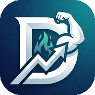
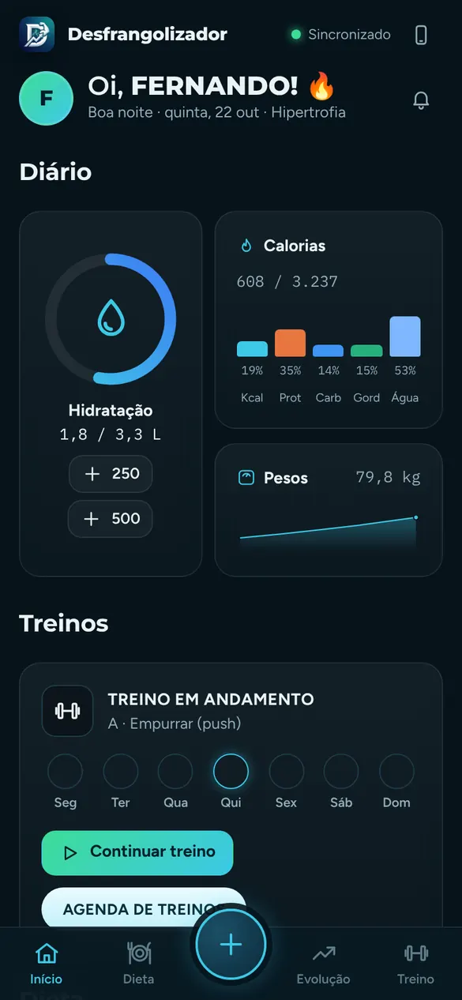
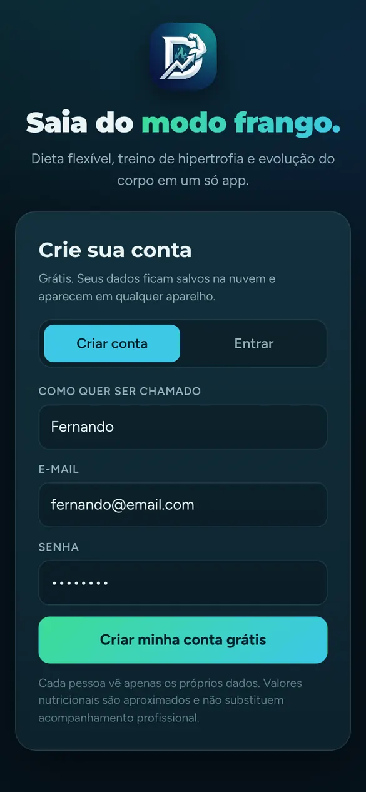
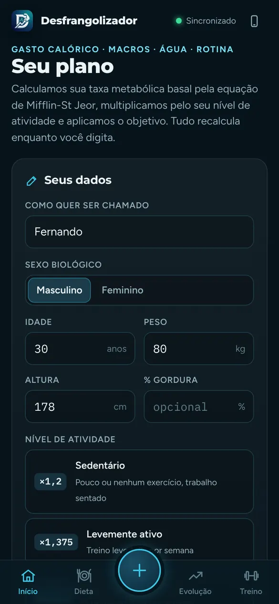
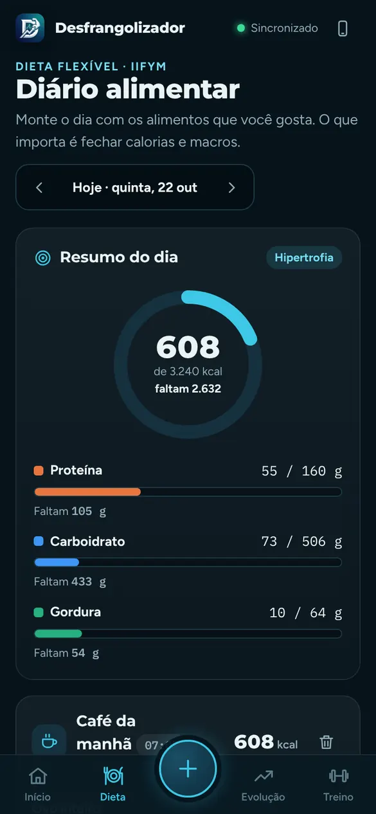
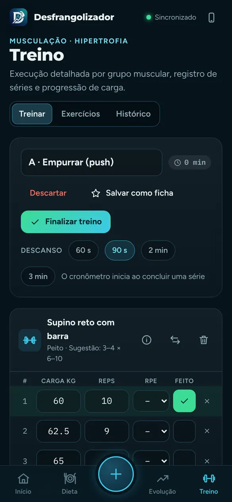
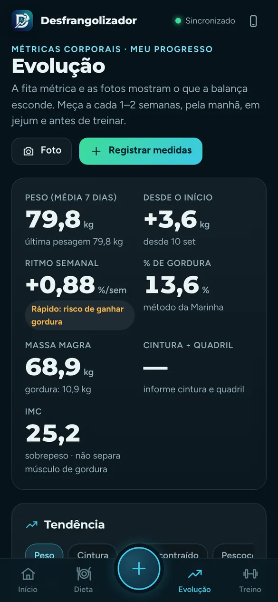

Desfrangolizador Entrar no appO Desfrangolizador junta dieta flexível, treino de hipertrofia e acompanhamento do corpo em um só app. Ciência do esporte no seu bolso, sem dieta engessada e sem pagar nada.

Do cálculo das calorias à última série do treino, cada parte do app foi pensada para quem quer ganhar massa ou secar com método.
Calcula seu gasto basal e total, a meta de +500 kcal para hipertrofia ou −500 kcal para secar, os macros e a água do seu dia.
Mais de 600 alimentos com macros. Monte as refeições, acompanhe as barras de proteína, carboidrato e gordura e troque qualquer item grama a grama.
129 exercícios por grupo e subgrupo muscular com execução detalhada, erros comuns e dicas. Fichas A a F prontas (Full body, Push/Pull/Legs, Upper/Lower) ou montadas por você.
Registre carga, reps e RPE de cada série, use o cronômetro de descanso e veja o gráfico de força (1RM) com alerta de estagnação.
Peso com média móvel de 7 dias, medidas guiadas, % de gordura, massa magra, cintura÷quadril e fotos de antes e depois lado a lado. Tem balança de bioimpedância? Registre gordura, músculo, água, gordura visceral, massa óssea, TMB e idade corporal, com faixas de referência e gráfico de cada um.
Sua água calculada pelo peso, idade e treino. Lembretes de refeição e suplementos pela hora que você acorda e dorme.
Suba de Frango para Em Evolução, Atleta e Avançado com constância. Diagnóstico da semana e relatório em PDF para o seu treinador.
Corra com GPS e mapa ao vivo, ou registre futebol, bike, luta e outros esportes. O gasto extra entra na sua meta de calorias e água do dia.
Feed no estilo Instagram: poste treinos, corridas, refeições, fotos e o Resumo do dia, curta com dois toques e comente. Stories que somem em 24 horas. Peso e medidas nunca vão para a Comunidade.
Guarde exames (hormonal, hemograma, lipídico, fígado, rins), pressão e sintomas, com faixas de referência e alertas para levar ao médico.
Instala na tela inicial como um app, abre sem internet e sincroniza com a sua conta em qualquer aparelho.
Arraste para ver as telas.





Não precisa baixar de loja. O app abre pelo navegador e vira um ícone na sua tela inicial.
Abra fernandocruzjr.github.io/Desfrangolizador no celular.
Assim ele abre como um app, em tela cheia e até sem internet.
Abra pelo cartão Calculadora no topo do Início ou pelo botão +.
Na barra de baixo ficam Início, Dieta, o botão +, Treino e Comunidade. Calculadora, Evolução e Saúde hormonal abrem pelos cartões do Início ou pelo +.
O resumo do dia: calorias, macros, água, o treino da semana e a dica do coach. Marque a água com os botões de 50, 100, 250 ou 500 ml, ou pelo botão +.
Escolha a refeição, busque o alimento e informe a quantidade em gramas. As barras de proteína, carboidrato e gordura mostram quanto falta. Dá para trocar um alimento por outro com os mesmos macros.
Em Fichas, escolha uma sugestão ou monte a sua. Em Treinar, marque carga, repetições e RPE de cada série; o descanso começa sozinho. Exercícios explica a execução de cada um.
Em Treino › Corrida, toque em iniciar para correr com GPS, ou registre um esporte pelo tempo. As calorias extras entram na meta do dia.
Pese-se de manhã, em jejum, 2 a 3 vezes por semana. Tire as medidas a cada 2 semanas e fotos no mesmo lugar e luz para comparar o antes e depois. Com balança de bioimpedância, suba nela sempre nas mesmas condições (de manhã, em jejum, pés secos, antes de treinar) e copie os números no bloco Balança de bioimpedância do registro.
Siga amigos e poste no feed ou no story, que some em 24 horas e mostra quem viu. Em Dieta › Resumo do dia, toque em Postar para mostrar como fechou calorias, macros e água. Toque duas vezes na foto para curtir. Dá para denunciar ou bloquear quem passar do ponto.
Atalho para o que você faz todo dia: adicionar alimento, água, peso, iniciar treino, correr com GPS, postar e abrir a Calculadora.
Toda semana o app mostra, dia a dia, onde você acertou e errou nas calorias, proteína e água, e se está comendo certo para o seu objetivo.
Sim. O Desfrangolizador é gratuito, sem anúncios e sem assinatura.
Ficam salvos na sua conta, e cada pessoa só consegue ver os próprios dados. Se trocar de celular, é só entrar com o mesmo e-mail e senha.
Funciona. Depois de instalado, o app abre e registra normalmente sem internet, e sincroniza com a sua conta quando a conexão voltar.
Não. Você instala direto pelo navegador, seguindo o passo 2 acima. Fica com ícone na tela inicial como qualquer app.
Na tela de entrar, toque em Entrar e depois em Esqueci minha senha. Você recebe um link por e-mail para criar uma nova.
Não. Ele organiza seu plano com fórmulas usadas no esporte (Mifflin-St Jeor, Katch-McArdle, Marinha dos EUA), mas não substitui o acompanhamento de um profissional. Os valores dos alimentos são aproximados.